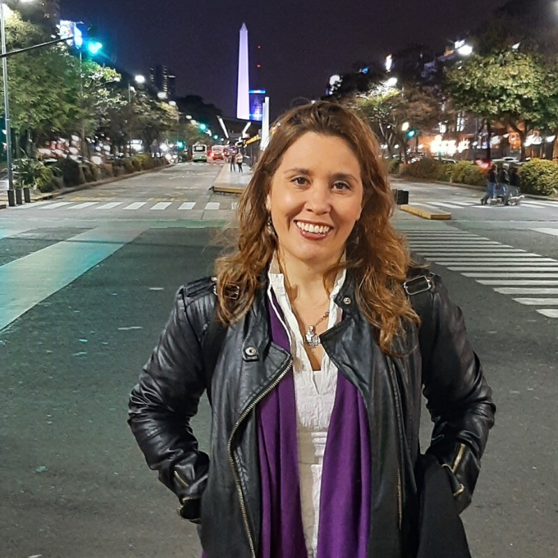

¿Quién soy?

Soy María Alina Gandini Viglino.
Traductora Pública y Subtituladora en el par de idiomas Español<>Inglés. Estoy cursando la carrera de Corrector Internacional de Textos. Además, soy Licenciada en Relaciones del Trabajo.
Mi camino laboral y profesional comenzó hace muchos años en la senda de los recursos humanos. Conocí muchas personas y trabajé en diferentes empresas nacionales y multinacionales. Tuve el enorme desafío de crear y liderar el área de recursos humanos, y establecer la empresa desde cero en nuestro país. Fueron años cargados de experiencias maravillosas y muchos aprendizajes.
Más tarde, conocí el mundo de la traducción. Una profesión que me apasiona.
Hoy, aprovecho y pongo en práctica mis experiencias, competencias y habilidades y las despliego en mi camino de la traducción.
Me encanta dedicar mi energía a proyectos nuevos y desafiantes.
Soy una persona inquieta, detallista, responsable, exigente, en constante movimiento.
Hago cursos de actualización y perfeccionamiento todo el tiempo. El aprendizaje constante me permite mantenerme actualizada y brindar el mejor servicio de manera eficiente y eficaz.
Mi objetivo es brindar todo de mí, acompañar y guiar a mis clientes y facilitarles los procesos.
Formación

Traductora Pública en Idioma Inglés
UADE, CABA
Correctora Internacional de Textos en Español
Fundación Litterae, CABA (en curso)
Licenciada en Relaciones del Trabajo
UBA, CABA
Formación y Especialización en Subtitulado
DECODE Linguistic Solutions, CABA
Asociaciones Profesionales
Matriculada en el Colegio de Traductores Públicos
de la Ciudad de Buenos Aires
Socia de la Asociación Argentina
de Traductores e Intérpretes
Ponencias y Charlas
Descubrí las ponencias y charlas que he tenido el privilegio de presentar en diferentes eventos y organizaciones. Estas experiencias reflejan mi compromiso con la comunidad de traductores y mi pasión por el español y la traducción.
-
Desafíos de la Traducción Audiovisual
Moderadora de la Ponencia presentada en el ENET 2021 organizado por la Comisión de Noveles del CTPCBA.
Agosto 2021 -
Comparación de archivos en PDF y en Word. Herramientas para comparar archivos bilingües
Participación en la charla para traductores matriculados y público en general sobre herramientas tecnológicas útiles para los traductores organizada por la Comisión de Recursos Tecnológicos.
Diciembre 2021 -
TAV, TAV, orden en la sala
Investigación, análisis y formulación de hipótesis sobre el uso del lenguaje jurídico en la traducción audiovisual. Análisis de series y películas. Ponencia presentada en conjunto en una charla organizada por la Comisión de TAV y la Comisión Jurídica del CTPCBA.
Julio 2022 -
Dra. Ortografía
Moderadora de la Ponencia presentada en el ENET 2022 organizado por la Comisión de Noveles del CTPCBA.
Agosto 2022 -
El español y el deporte
Moderadora de la Charla organizada por la Comisión de Español.
Diciembre 2022 / Junio 2023 -
La IA y el español: herramientas y experiencias
Investigación y funcionamiento de la IA y el español, recursos de corrección y su funcionamiento, ventajas y desventajas, la importancia de la formación. Ponencia presentada en la Jornada de IA organizada por la Comisión de Recursos Tecnológicos del CTPCBA.
Octubre 2023 -
Sabemos que sabemos, ¿pero es suficiente lo que sabemos?
La importancia de la formación continua del español. Ponencia presentada en el ENET organizado por la Comisión de Noveles del CTPCBA.
Noviembre 2023 -
Herramientas de corrección gratuitas y pagas
Charla presentada en la Comisión de Traductores Noveles del CTPCBA.
Noviembre 2023
Servicios
Traducción de Textos
ES<>EN

- Documentos personales: certificados de nacimiento, matrimonio, antecedentes penales, domicilio, etc.
- Documentos académicos: programas de estudio, analíticos, diplomas.
- Documentos empresariales: políticas, procedimientos, descripciones de puestos, evaluaciones, guías, comunicaciones varias, manuales de capacitación.
- Documentación legal: poderes, actas, contratos, sentencias, testamentos.
- Textos técnico-científicos: publicaciones, tesis, artículos, libros, notas, manuales.
- Legalizaciones ante el CTPCBA con firma ológrafa y digital.
- Asesoramiento sobre el proceso y la documentación requerida ante cada organismo.
- Traducciones urgentes.
- Edición. Posedición.
Traducción Audiovisual
ES<>EN
- Subtitulado: traducción y pegado de subtítulos en el video.
- Transcripción.
- Edición. Posedición.
- Corrección.
Corrección de Textos
ES<>EN

- Textos académicos, periodísticos, jurídicos, tecnico-científicos.
- Traducciones.